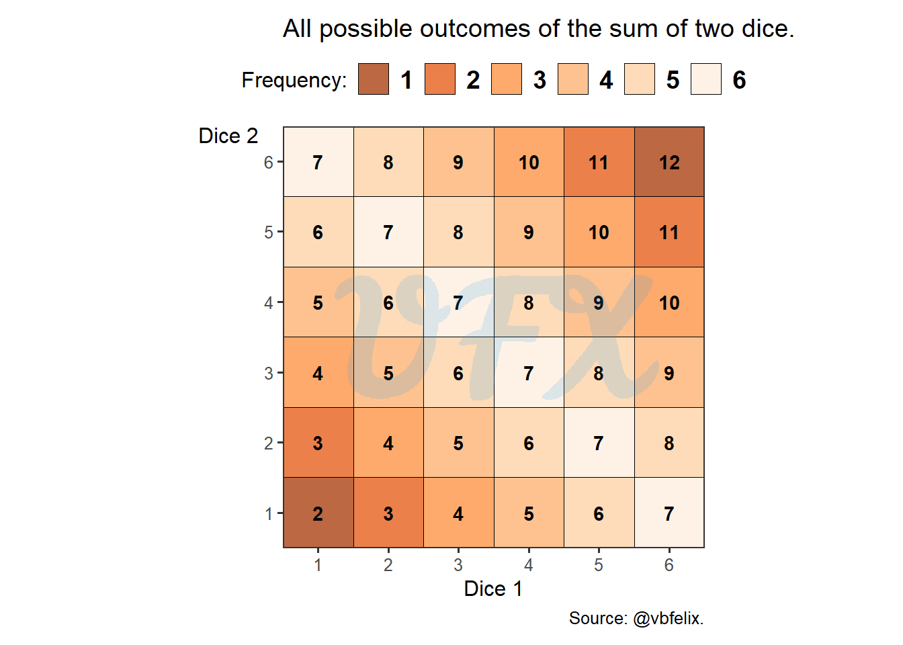
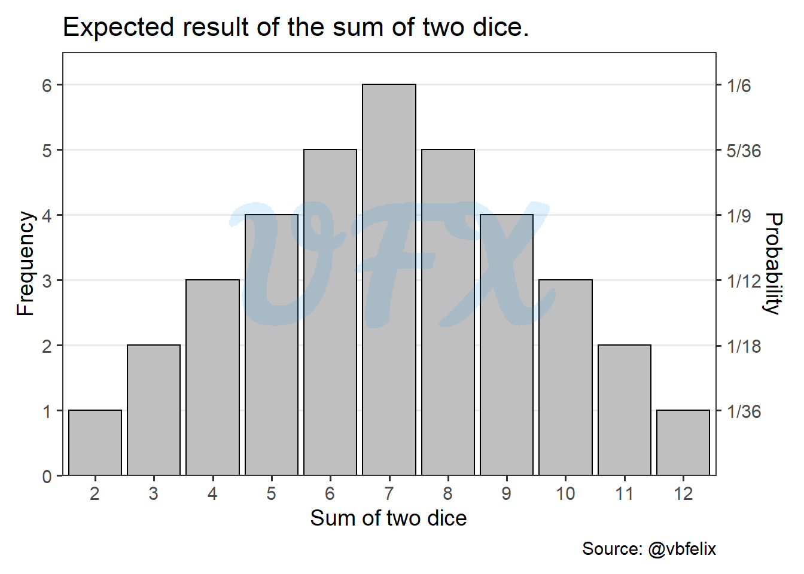
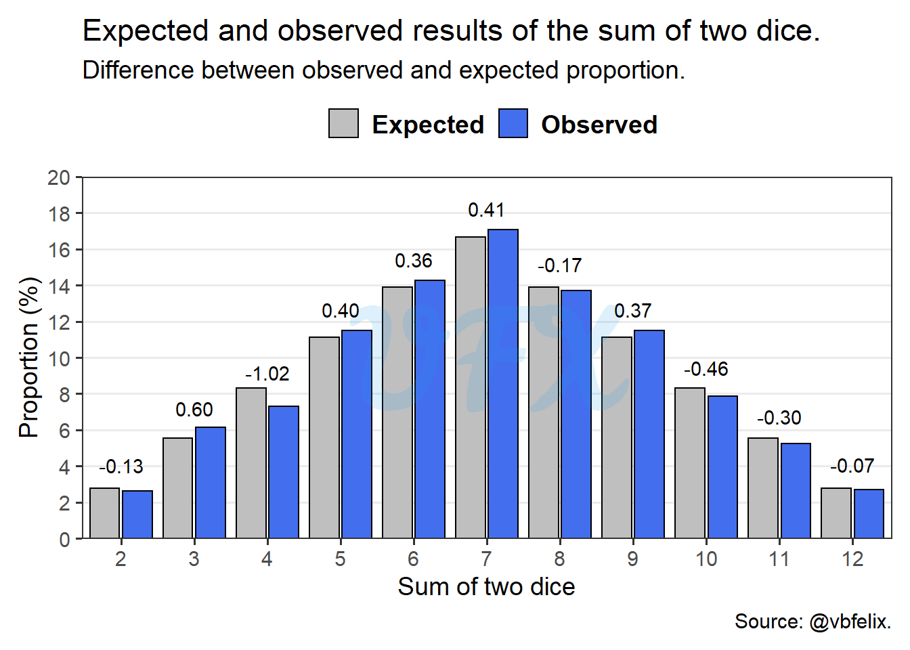

In this post of the series An analysis of, I’ll do a data analysis of my favorite board game, Settlers of Catan.
Context
Settlers of Catan, or just Catan is a board game designed by Klaus Teuber. In the game we take the role of settlers.

The game has 19 locations, where:
| Location | Resource | Number of locations |
|---|---|---|
| Pasture | Wool | 4 |
| Hill | Brick | 3 |
| Mountain | Ore | 3 |
| Field | Grain | 4 |
| Forest | Lumber | 4 |
| Desert | None | 1 |
Each location, with the exception of the desert will have a number, this number is one the possible results of the sum of two dices, so they will vary from 2 to 12, where the number 7 we will result in the action of the robber, where you can choose to block 1 location and rob 1 random resource from a player located there.
The main goal of the game is to achieve 10 points (P), to achieve points we have structures:
Road: 1 brick + 1 lumber
(1P) Settlement: 1 Brick + 1 lumber + 1 wool + 1 grain
(2P) City: 3 ores + 2 grains
We also have the development card: 1 ore + 1 wool + 1 grain, which you draw randomly from a deck of cards with different effects, one of them been cards that award you 1P.
And lastly, achievements:
(2P) Longest road: the player that first achieve a sequencial road of size 5;
(2P) Largest army: the player that first uses 3 knight cards (development card).
For more in-depth information check the rules in the official site.
Analysis
For the analysis we will use the dataset My Settlers of Catan Games from the user Lumin of Kaggle.
Is the dice fair?
The first analysis will be of the dice rolls, every turn each player roll 2 dices and use the sum of them so the respective location will give resources.
Considering that for each dice we have 6 possible outcomes we will consider a probability of 1/6 to each result, and we will compute the probability of each result for the sum of two dices.

In the figure above we can see an graph where in each axis is the result of each dice, and we can we see all possible results of the sum of those dices, than we can see that some results appears more frequenty than others, e.g., the number 7 is the most frequent result, since it appears 6 times. Another interesting result is that we can see a simmetry in the results, let’s take a look using another visual form.

As previously stated, the results are simmetry centred on the number 7, and the extreme results are 2 and 12, with only one combination possible for each.
So now we will take a look at the observed data versus the expected outcome.

Comparing the observed values from the real dataset we can see that the results from dice seems pretty fair, since is very similar to our expected outcome, the largest difference was from the number 4 where the observed values were 1.02 percentual points below the probabilty.
The last will be the first?
The order in this game is crucial, since it gives you the power to decide the locations of your settlement, but been the last one is not the worst, because you become the first to put you second settlement in the map.